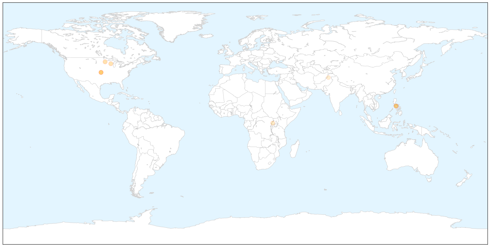

Toggle navigation
Early Warning
Return to Dashboard
Points of Interest
About the Project
Measles
Jun 02, 2014
Compare to:
-
Dengue Fever
Hemmorhagic Fever
Mold/Fungal Infection
Influenza
Meningitis
Pertussis / Whooping Cough
Middle East Respiratory Syndrome
Cholera
Hepatitis
Chikungunya
Yellow Fever
Bubonic Plague
West Nile Virus
Swine Flu
Ebola
Unknown
Mumps
30 Day Trends
Web: 0
alerts
, 0
warnings
Twitter: 0
alerts
, 0
warnings
Top Articles:
0.993
Ohio measles outbreak a ‘wake-up call’
0.990
Measles Exposure at Seattle Airport
0.975
Seattle Airport Warns of Measles Exposure
0.974
Seattle Airport Warns Of Measles Exposure
0.958
Measles: A deadly disease not yet vanquished
0.899
Measles at record level elsewhere in state — not on Peninsula -- Port Angeles Port Townsend Sequim Forks Jefferson County Clallam County Olympic Peninsula Daily news
0.799
Child with measles visited Sea-Tac in late May
0.752
Measles cases at 20 year high
0.686
Uganda: Measles Outbreak DREF operation n° MDRUG035 Preliminary Final Report - Uganda
0.538
7 Children Died After Measles Vaccination in Pakistan
Top Tweets:
No tweets found for Jun 02, 2014
Web/News Articles
X
Tweets
X
Article Locations
X

Article Confidences
X